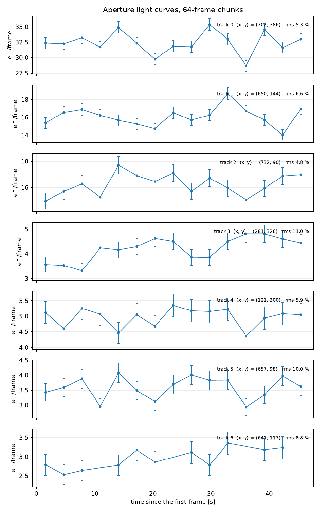
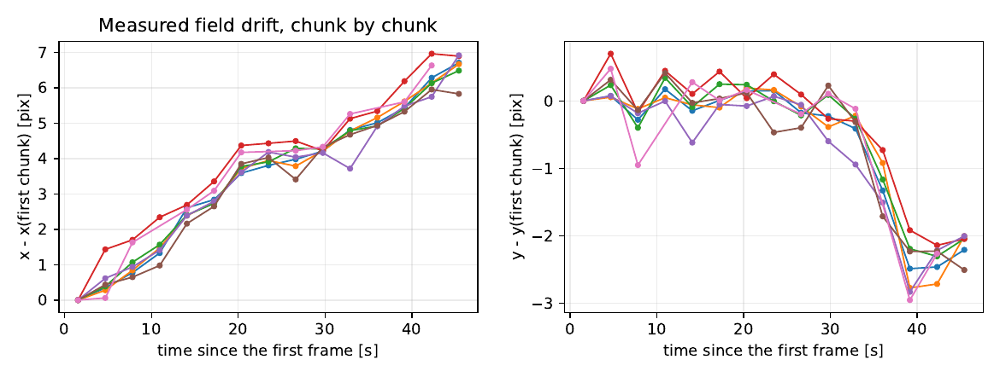
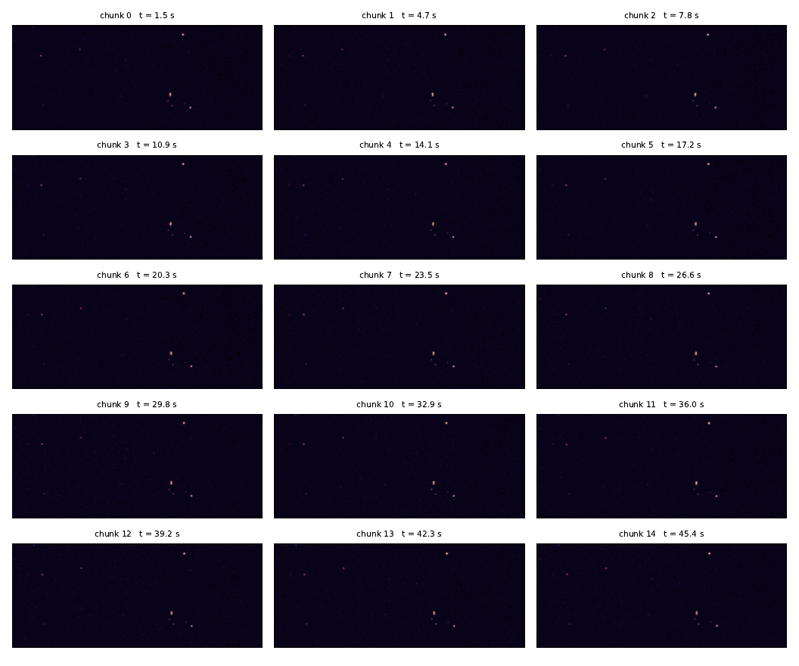
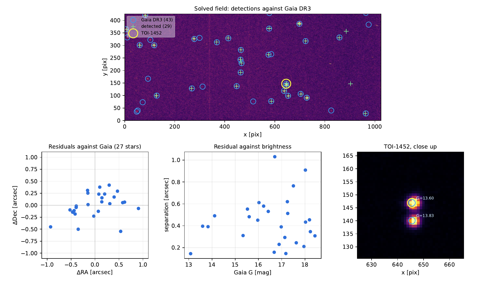

Everything lands in data_bin/
Nothing is ever written next to your raw frames. If you want the results
somewhere else, change one line in the settings file:
output.directory.
Every file here is gzipped. astropy compresses and decompresses on the file
name alone, so fits.open('….fits.gz') and DS9 read them with
no extra step, and gunzip gives you an ordinary FITS file. It is
worth doing systematically: a histogram cube is small counts and empty sky, and
7.0 MB of data comes to 0.75 MB on disk. Set
output.compress: false for plain .fits.
| File | What it is |
|---|---|
| embin_chunk00.fits.gz embin_chunk01.fits.gz … |
One cube file per chunk of frames: the histograms, the star stamps, the frame headers. This is the data, and the only thing worth archiving. Described below. |
| embin_chunk00_flux.fits.gz embin_chunk01_flux.fits.gz … |
The mean flux of that chunk and its error, in two extensions. A fit to the cube beside it, and rebuildable from that cube at any time, so losing one costs nothing but the re-fit. |
| chunk_summary.fits.gz | All the chunks stitched together in time, plus the light curves. |
| figures/bins_on_data.pdf | Your bin edges drawn on your own data. Written by plot_bins.py. |
| figures/chunk_lightcurves.pdf | Flux of every tracked star, chunk by chunk. |
| figures/chunk_drift.pdf | How far the field moved during the sequence, measured from the stars themselves. |
| figures/chunk_flux_maps.pdf | The flux map of every chunk, side by side. |
Inside one embin_chunkNN.fits.gz
Every chunk comes as two files. This one, the cube file, holds
the measurement and nothing derived from it; the mean flux fitted from it lives
beside it in embin_chunkNN_flux.fits, described below.
A FITS file can hold several data blocks, called extensions. List them with:
| Extension | Shape | Contents |
|---|---|---|
| PRIMARY | no data | A header recording every setting of the run: the bin edges, the detector constants, the flux grid, which frames went in, how many values fell in the open top bin. If you ever wonder how a file was made, this is where the answer is, and it is also complete enough to redo the flux fit from this file alone. |
| HISTCUBE | 16 × 426 × 1024 | The histograms themselves. Plane b holds, for every pixel, how many frames of this chunk fell in bin b. This is the compressed data: 16 numbers per pixel instead of 64 frames, and one byte each, since a count of 64 frames cannot exceed 255. Above 255 frames the type widens to uint16, above 65535 to int32. |
| HEADERS | 64 rows | One row per input frame, one column per FITS keyword, so the timestamps and the instrument settings survive the compression. |
| STAMP01, STAMP02, … | 64 × 16 × 16 | The raw, untouched ADU values of every frame in a small box around each detected star. Nothing about a star's own pixels is lost. |
The sizes shown are for the PESTO test data. 426 × 1024 is the frame size, 16 is the number of bins, 64 is the chunk size. Yours will differ if any of those differ.
Inside one embin_chunkNN_flux.fits.gz
The flux file: the answer, in two extensions.
| Extension | Shape | Contents |
|---|---|---|
| PRIMARY | no data | Provenance. CUBEFILE names the cube these maps were fitted from, and the bin edges, detector constants and flux grid are copied from its header, so a flux map is never separable from the data behind it. |
| FLUX | 426 × 1024 | The fitted mean flux of each pixel, in electrons per frame. |
| FLUX_ERR | 426 × 1024 | The 1-sigma error on that flux, same units. |
Getting a flux map out
Or skip the flux file and fit the cube yourself. It holds everything the fit needs, so this gives the same two maps, to the bit:
From the shell, python embin.py --from-cube data_bin/embin_chunk00.fits.gz
writes the flux file for a cube that has none, or replaces one you deleted. You
can also open either file in DS9 and step through the extensions there; the
HISTCUBE extension will show as a 16-plane cube.
Inside chunk_summary.fits.gz
This is the file to use for anything time-resolved. It holds the flux maps of every chunk stacked into one cube, and two tables.
| Extension | Contents |
|---|---|
| FLUX, FLUX_ERR | The per-chunk flux and error maps, stacked: (15, 426, 1024) for the test sequence. Plane 0 is the first chunk in time. |
| CHUNKS | One row per chunk: which frames it used, its start, middle and end time in seconds since the first frame, the sky level, how many stars were found. |
| TRACKS | One row per star per chunk: which star (track), which chunk, the time, the position, the aperture flux and its error. This is the light curve table. |
| VARSTAT | One row per star: the chi-square of its light curve against a constant flux (chi2, dof, chi2_red), the probability a non-variable star would scatter that much (p_value), the same thing as a Gaussian significance (sigma), and the scatter left over once the photon errors are removed (excess_rms_pct). This is the table that answers "is it really variable?". |
A "track" is one star followed from chunk to chunk. Stars are matched between
consecutive chunks by position, within chunks.match_radius pixels.
Track numbers are ordered by how many chunks the star appears in, then by
brightness, so track 0 is normally the brightest star that is present throughout.
The three figures, and what to look for

chi2/dof in each panel header is measured against it.
On the test sequence nothing reaches 5 sigma, so nothing here is variable. The brightest star comes closest at
chi2/dof = 3.76 (4.6 sigma), with
4.7 % of scatter left over after the photon errors are removed, and the stars do
not move in step, which is what atmospheric scintillation at a 3-second
cadence looks like, not a variable star. Check your own the same way: an honest
detection needs a large chi2/dof and a pattern the other
stars in the field do not share.


chunks.size should come down.
Putting it on the sky, and finding out what you are actually measuring
Everything above is in pixels. One optional step turns that into RA and Dec, and it answers a question no amount of photometry can: is this light curve one star, or two?
It stacks all the chunks after taking the measured drift out, solves that with astrometry.net, and then refits the WCS to Gaia DR3, using the solver only to decide which detection is which catalogue star. The header it writes is deliberately plain:
RA---TAN/DEC--TAN, no SIP. Over an 8-arcminute field a linear CD matrix is the whole story. The program does not ask you to take that on faith: it prints what a quadratic and a cubic would reach, next to how many free parameters each spends. On this data the CD matrix gets 27 stars to 0.49″ RMS and a cubic gets to 0.06″, but with 20 free parameters for 54 measurements, which is fitting the centroid noise, not the optics.CRPIXat the exact centre of the field,((nx+1)/2, (ny+1)/2), withCRVALthe sky position there. Not wherever the solver happened to leave it.- A measured pixel scale, which is not the published one. PESTO
is quoted at 0.466″/px (Cadieux et al. 2022); this sequence solves at
0.4547″/px, consistently, with log-odds above 100. Trust
PIXSCALEin your own header.

Afterwards every row of TRACKS carries an ra and a
dec, and the program says in words which light curve is your target:
That warning is the reason to run this step at all. A tracked source is a detection, not a star. Track 1 is the blend of TOI-1452 and its known companion, so any transit depth measured from it, uncorrected, is too shallow. The discovery paper hit exactly this and had to fall back on PSF fitting to decide which of the two stars the transit came from.
Four checks worth doing every time
- Does the sky level make sense? The program prints it for every chunk. On the PESTO test sequence it reads 0.0159 to 0.0170 e−/frame, against 0.0162 ± 0.0001 from an independent MCMC calibration of the same data. Agreement like that means the detector constants and the bins are right.
- Is the sky level stable from chunk to chunk? A jump means something changed: clouds, the moon, a different gain setting mid-sequence.
-
Do the stars look round in
chunk_flux_maps.pdf? Streaks mean the chunks are too long. -
Is anything landing in the open top bin? The header keyword
NOVERcounts the pixel values that exceeded the last edge. On the test data it is 39 out of 27.9 million, which is the design working as intended. A large number means your fluxes are higher than the range the bins were designed for, and you should redesign them.
When something goes wrong
| What you see | What it means |
|---|---|
| no file matches …/data_night/*.fits | The folder is empty, or input.directory points at the wrong place. |
| only 12 frame(s) found … | You have fewer frames than chunks.size. Lower it. |
| histogram.edges must be strictly increasing | You edited the edge list and left two equal or out-of-order numbers. |
| ModuleNotFoundError | The virtual environment is not active in this terminal. Run source .venv/bin/activate. |
The flux map is nearly all 0.0001 | That is fit.mu_min, the bottom of the search grid. Background pixels really did see nothing over a few frames; this is normal, not a bug. |
Every star sits exactly at fit.mu_max | Your flux grid stops below the real fluxes. Raise mu_max, and redesign the bins for the higher range. |
| Stars look stretched or doubled | The field drifted too much inside one chunk. Lower chunks.size. |